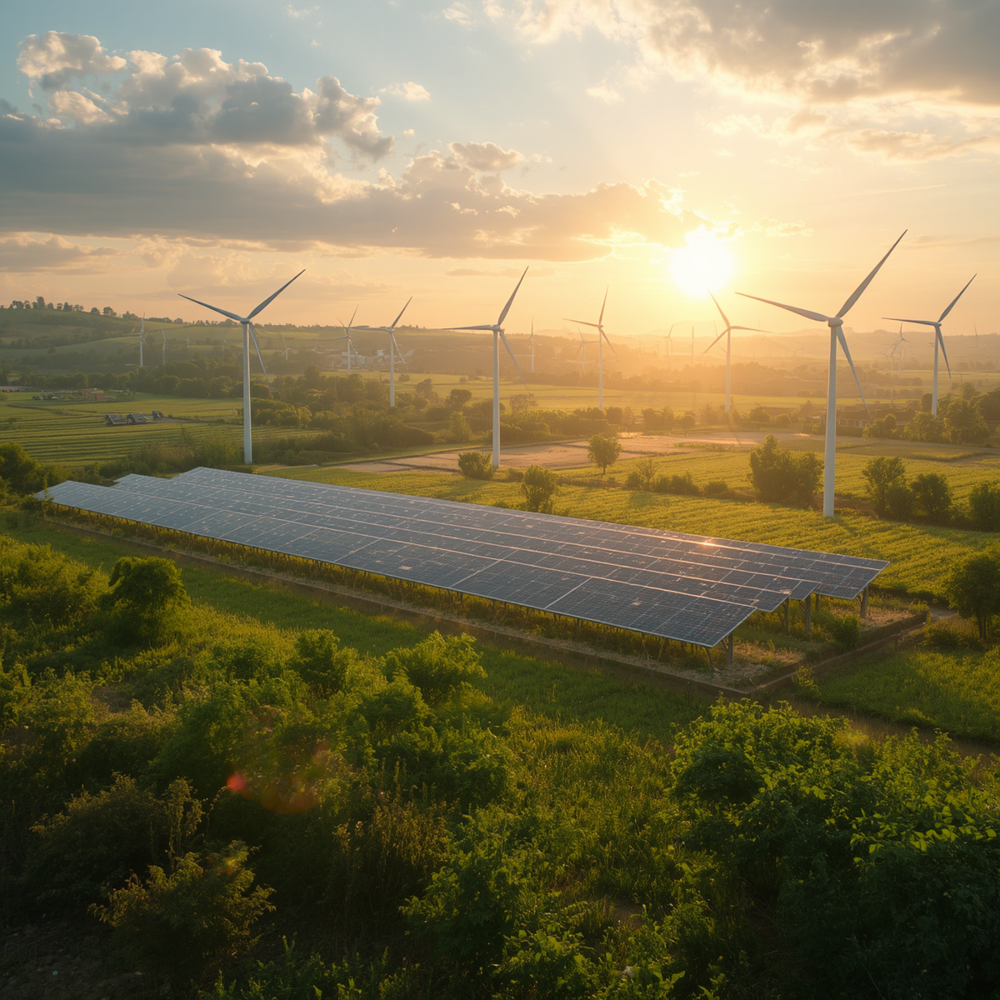

A agricultura moderna evolui constantemente com o auxílio da tecnologia, permitindo maior produtividade sem deixar de lado a preservação ambiental. O equilíbrio entre produção e sustentabilidade é essencial para garantir segurança alimentar e qualidade de vida.
O agronegócio movimenta bilhões de reais e gera milhões de empregos.
O uso de GPS e sensores aumenta a produtividade e reduz desperdícios.
Práticas modernas equilibram produtividade e preservação ambiental.
Monitoramento das plantações, análise do solo e aplicação precisa de produtos.

Drones capturam imagens em alta resolução. A Inteligência Artificial identifica falhas, pragas e falta de nutrientes, permitindo ações rápidas.
Sistemas inteligentes analisam dados para melhorar decisões no campo.
Sensores monitoram umidade, clima e condições da lavoura em tempo real.
O agronegócio movimenta bilhões e gera milhões de empregos.
Drones, GPS, sensores e inteligência artificial aumentam a eficiência.
Rotação de culturas, reflorestamento e redução do desperdício.
Plantio direto e cobertura vegetal reduzem a erosão.
Energia solar e biodigestores reduzem impactos ambientais.
Mudanças climáticas, queimadas e desperdício de água.
Redução da biodiversidade, erosão e perda de produtividade.
Agricultura de precisão, sensores inteligentes e IA.
Recuperação do solo e preservação dos recursos naturais.
Máquinas autônomas e monitoramento em tempo real.
Plantio
Monitoramento
Drones
Análise por IA
Colheita
Digite a quantidade de árvores plantadas:
Qual prática ajuda na conservação do solo?
Produtores utilizam sensores e análise de dados para aumentar produtividade e reduzir desperdícios.
Sistemas automatizados ajudam na irrigação sustentável.
Técnicas regenerativas recuperam áreas degradadas.

"A adoção de sensores e irrigação inteligente aumentou nossa produção em 30%."

"O plantio direto reduziu custos e melhorou a qualidade do solo."
